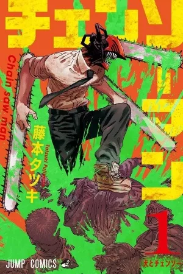
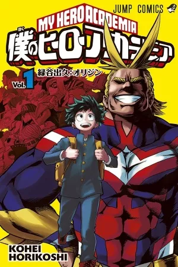
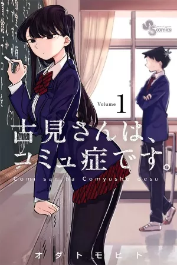
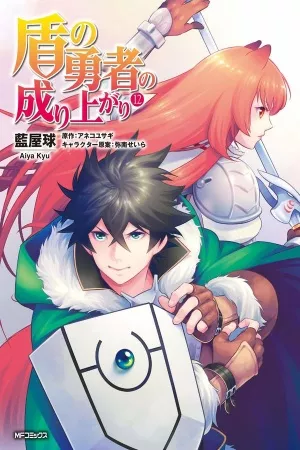
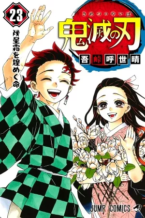
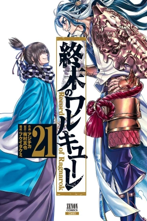
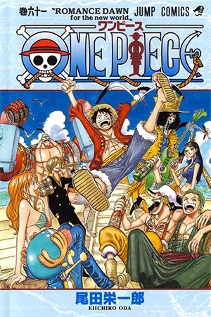
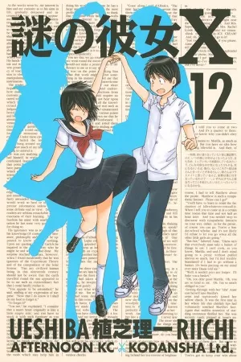

Chainsaw Man

Chainsaw Man
チェンソーマン
Cuando su padre murió, Denji se vio obligado a saldar una gran deuda y no había forma de pagarla. Pero gracias a la ayuda de un Demonio Perro que salvó llamado Pochita, Denji es capaz de sobrevivir convirtiéndose en un Cazador de demonios a sueldo, haciendo trabajos para los Yakuza.
Boku no Hero Academia

Boku no Hero Academia
僕 の ヒーロー アカデミア
La historia está ambientada en la época actual, excepto que las personas con poderes especiales se han vuelto comunes en todo el mundo. Un chico llamado Izuku Midoriya no tiene poderes, pero sueña tenerlos.
Komi-san wa, Komyushou

Komi-san wa, Komyushou
古見さんは、コミュ症です。
El viaje a 100 amigos comienza con una sola conversación. El mayor sueño de la estudiante de secundaria socialmente ansiosa Shouko Komi es hacer amigos, ¡pero todos en la escuela confunden su ansiedad social paralizante con una reserva fría!
Tate no Yuusha no Nariagari

Tate no Yuusha no Nariagari
盾の勇者の成り上がり
Iwatani Naofumi es convocado a otro mundo a convertirse en uno de los cuatro héroes, llamados "the shield hero". Comenzando con la mala popularidad y etiquetado como el más débil, Naofumi se vio traicionado a los tres días de su aventura. habiendo perderdido la fe y el dinero, todo lo que queda es sólo su escudo.
Kimetsu no Yaiba

Kimetsu no Yaiba
きめつ の やいば
Tanjirou es el hijo mayor en una familia quien perdió a su padre. Un día, va de visita a otro pueblo para vender carbón, y termina quedándose a pasar la noche en la casa de un lugareño, ya que abunda el rumor de un demonio que ronda por las montañas por la noche. Cuando vuelve a casa al siguiente día, una tragedia lo estaba esperando.
Shuumatsu no Valkyrie

Shuumatsu no Valkyrie
終末のワルキューレ
Los Dioses se reúnen con el objetivo de decidir si la humanidad debe vivir o morir. Y aunque llegan a la conclusión de que debe perecer, una Valkyria propone que una lucha de dioses contra humanos para tomar tan difícil decisión. Así, 13 humanos pelearán contra 13 Dioses para resolver el destino de la humanidad.
One Piece

One Piece
ワンピース
Hace veintidós años, el legendario pirata, Gold Roger fue ejecutado. Sus últimas palabras fueron que su tesoro conocido como "One Piece" estaba escondido en algún lugar dentro del vasto océano conocido como el "Grand Line" (Gran Ruta Marítima).
Nazo no Kanojo X

Nazo no Kanojo X
謎の彼女Ｘ
Mikoto Urabe es una chica rara, no está interesada en socializarse. Un día, Akira Tsubaki, un compañero de clase, la encuentra durmiendo en su pupitre, y prueba su saliva sin pensarlo. Al cabo de unos días cae enfermo. Al no recuperarse, Mikoto le visita y le pregunta si él probó su saliva.